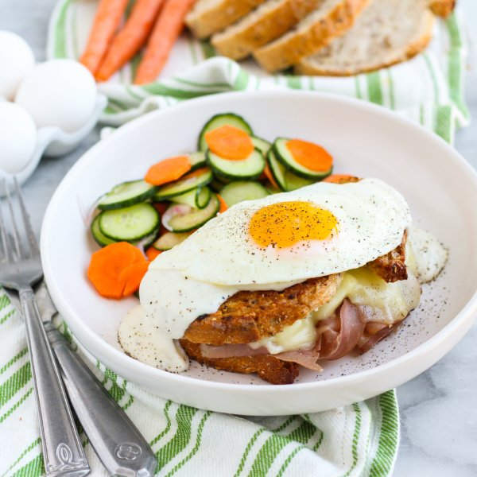

Saucy Grilled Ham & Cheese "Croque Madame" with Pickled Veggies

Total Time
40 min
Nutrition (Per Serving)
693.1 kcalCalories
40.4 gProtein
47.1 gCarbs
38.5 gFat
Full nutrition table
| Calories | 693.1 kcal |
| Total fat | 38.5 g |
| Saturated fat | 20.2 g |
| Trans fat | 0.9 g |
| Cholesterol | 275.4 mg |
| Sodium | 1543.8 mg |
| Carbohydrates | 47.1 g |
| Fiber | 6.3 g |
| Sugars | 14.3 g |
| Protein | 40.4 g |
| Potassium | 624.3 mg |
| Calcium | 522.7 mg |
| Iron | 4 mg |
| Vitamin A | 854.5 IU |
| Vitamin C | 5.4 mg |
| Vitamin D | 84.9 IU |
Cookware
Ingredients
- 2 mediumcarrots
- 4eggs
- 1English cucumber
- 1 (8 oz) blockmozzarella cheese
- 12 slicesprosciutto
- 2shallots
- 8 sliceswhole grain bread
- 8 fl ozwhole milk
- all-purpose flour
- black pepper
- brown sugar
- butter, unsalted
- Dijon mustard
- rice vinegar
- salt
Steps
- Place vinegar, sugar, and salt in a medium bowl; whisk to combine the marinade.½ cup rice vinegar
2 tsp brown sugar
1 tsp salt - Wash, dry, peel, trim, and thinly slice carrots. Peel and thinly slice shallots; add both to the bowl with the marinade.2 medium carrots
2 shallots - Wash, dry, trim, and thinly slice cucumber; add to the bowl, toss to combine, and set the veggies aside to marinate.1 English cucumber
- Thinly slice mozzarella.1 (8 oz) block mozzarella cheese
- Place the bread slices on a flat surface and spread with Dijon. Evenly top half the slices with the mozzarella and prosciutto. Cover the sandwiches with remaining bread slices.8 slices whole grain bread
4 tsp Dijon mustard
12 slices prosciutto - Preheat a large skillet over medium heat.
- Once the skillet is hot, add butter and swirl to coat the bottom. Working in batches if necessary, place sandwiches in the skillet and cook until the bottoms are golden brown, 2-4 minutes.2 tsp butter, unsalted
- Remove sandwiches to a plate and add more butter to the skillet. Return sandwiches to the skillet, browned-side up; cook until golden brown on the other side and the cheese is melted, 2-4 minutes. Once done, transfer to a cutting board.2 tsp butter, unsalted
- Wipe the skillet clean with a paper towel; return to medium heat, and add more butter. Gently crack eggs into the skillet and cook until whites are set but yolks are still runny, about 3 minutes. Remove from heat and season with salt and pepper.2 tsp butter, unsalted
4 eggs
⅛ tsp salt
⅛ tsp black pepper - Meanwhile, preheat a small saucepan over medium-high heat.
- Once the saucepan is hot, add butter and swirl to coat the bottom. Add flour, salt, and pepper; cook, stirring constantly, until fragrant, about 1 minute.2 tbsp butter, unsalted
2 tbsp all-purpose flour
¼ tsp salt
⅛ tsp black pepper - Slowly whisk milk into the saucepan; bring to a boil and cook until sauce is thickened, 2-3 minutes.8 fl oz (1 cup) whole milk
- Divide sandwiches between plates; drizzle with sauce and top with a fried egg. Serve with pickled veggies on the side and enjoy!